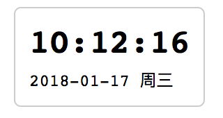

自定义元素（customElements）
纯展示组件：一个时钟挂件
我们首先来看一个极简单的组件，它由一个 HTML 文件（主文档）和一个组件脚本组成：
├── clock
│ ├── index.html
│ └── my-clock.js
我们的目标是使用自定义元素（customElements）API，获得一个可以展示当前时间的日期组件，效果如下图所示：

时钟组件 clock.js 文件的内容如下：
/**
* 时钟组件示例-v1
*/
function getTimeStr() {
var time = new Date();
return time.toString();
}
class MyClock extends HTMLElement {
constructor() {
super();
var shadow = this.attachShadow({mode: 'open'});
var text = document.createElement('span');
text.textContent = getTimeStr();
shadow.appendChild(text);
setInterval(function() {
text.textContent = getTimeStr();
}, 250);
}
}
customElements.define('my-clock', MyClock, {extends: 'p'});
在这段代码中，customElements 方法的语法是这样的：
customElements.define(name, constructor, options);
其中，
name表示自定义的标签名constructor是每个新标签在创建的时候执行的构造函数options可选，是一个对象，用于指定元素创建的参数。目前只支持一个，即extends，用于表示希望自定义的元素继承哪个内置元素
我们可以对上面的组件JS代码进行优化，例如丰富时间展示的内容，使用 IIFE 来生成一个块作用域，以及在 Shadow DOM 内使用模板一次性插入更多的 HTML 片段：
/**
* 时钟组件示例-v2
*/
(function() {
/**
* 如果num小于10，则在其左侧填充0
* @param {Number} num
* @return {String|Number}
*/
function leftPadding(num) {
if (num < 9) {
return '0' + num;
}
return num;
}
/**
* 解析当前时间
*/
function getTimeStr() {
var time = new Date();
var hour = leftPadding(time.getHours());
var minute = leftPadding(time.getMinutes());
var second = leftPadding(time.getSeconds());
var year = time.getFullYear();
var month = leftPadding(time.getMonth() + 1);
var day = leftPadding(time.getDate());
var str = `${hour}:${minute}:${second}`;
var weekZNArray = ['日', '一', '二', '三', '四', '五', '六'];
var weekDesc = '周' + weekZNArray[time.getDay()];
return {
weekDesc: weekDesc,
date: `${year}-${month}-${day}`,
time: str,
};
}
/**
* 用于创建自定义元素的构造函数
*/
class MyClock extends HTMLElement {
constructor() {
super();
var shadow = this.attachShadow({mode: 'open'});
var $div = document.createElement('div');
var display = () => {
var now = getTimeStr();
this.value = now;
$div.innerHTML = `
<div>${now.time}</div>
<div style="font-size: 12px; font-weight: normal; padding-top: 5px;">${now.date + ' ' + now.weekDesc}</div>
`;
}
display();
shadow.appendChild($div);
setInterval(function() {
display();
}, 500);
}
getValue() {
return this.value;
}
}
customElements.define('my-clock', MyClock, {extends: 'div'});
})();
使用时，只需在 index.html 里引入 my-clock.js，然后直接使用标签 <my-clock></my-clock>，或者 <my-clock/> 就可以了。如下所示。
<!DOCTYPE html>
<html>
<head>
<title>纯展示组件：一个时钟挂件</title>
<meta charset="utf-8">
<meta name="viewport" content="width=device-width,initial-scale=1,maximum-scale=1">
<style type="text/css">
my-clock {
display: inline-block;
border: 1px solid #ccc;
border-radius: 5px;
padding: 10px;
margin: 10px;
font-size: 24px;
font-weight: bold;
font-family: monospace;
}
</style>
</head>
<body>
<my-clock id="first-clock"></my-clock>
<script type="text/javascript" src="./my-clock.js"></script>
<script type="text/javascript">
var firstClock = document.getElementById('first-clock');
var val = firstClock.getValue();
// 这两行都会打印形如 {weekDesc: "周日", date: "2018-02-25", time: "10:23:02"} 的对象
console.log(val);
console.log(firstClock.value);
</script>
</body>
</html>
上面的 HTML 文件比较简单，我们使用了自定义的 <my-clock></my-clock> 标签，并且引用了定义了该标签对应的组件的 JavaScript 文件 my-clock.js。而且，由于在上面的 clock.js v2 版本里，我们给 <my-clock> 元素添加了自定义的属性 value 和方法 getValue()，因此，在 HTML 在主脚本里，我们可以获取到 <my-clock id="first-clock"></my-clock> DOM 元素实例（firstClock），然后直接访问相应的自定义属性或调用方法。
自定义事件
TODO
浏览器支持情况
Custom Elements v1 是指 Supports "Autonomous custom elements" but not "Customized built-in elements"
| Firefox (Gecko) | Chrome | IE | Safari | Opera |
|---|---|---|---|---|
| No support | 59.0 | No support | 10.1 | 47 |
| Android | iOS Safari | |||
| 62 | 10.3 |
问题
- 样式可否被父文档修改？CSS
- 父文档如何与组件进行交互？函数式